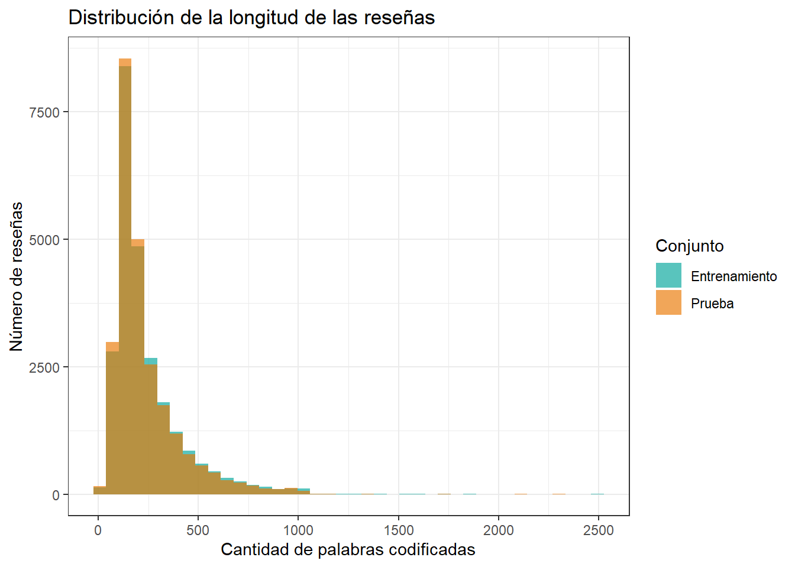
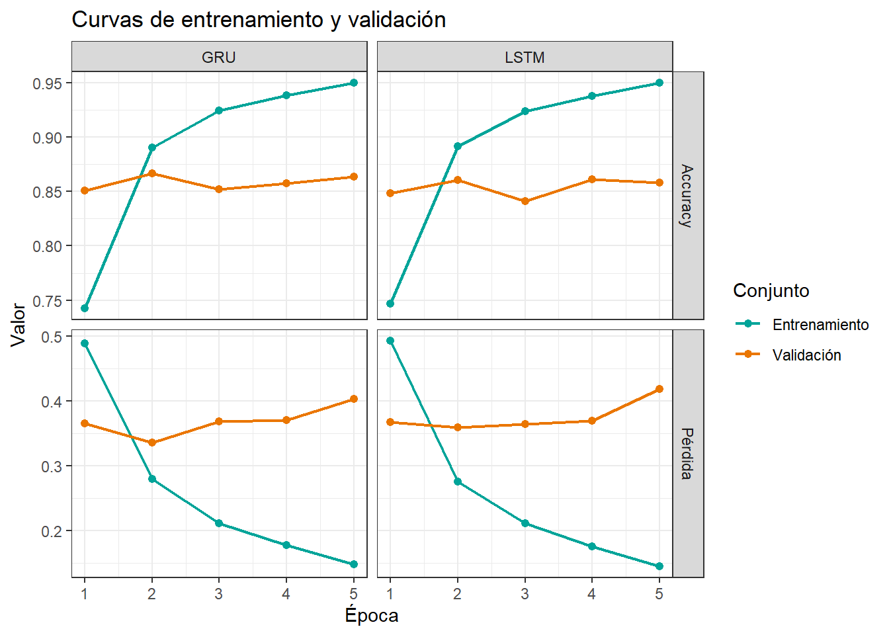

library(tensorflow)
library(keras)
library(tidyverse)
set.seed(100)
tensorflow::tf$random$set_seed(100)
modo_rapido <- FALSEDeep Learning
LSTM y GRU: análisis de sentimiento con IMDB en R
1 Introducción
Exploraremos una tarea de clasificación de sentimiento usando reseñas de películas. La entrada será una secuencia de palabras y la salida será una única etiqueta:
0: reseña negativa;1: reseña positiva.
Este es un problema muchos a uno: muchas palabras entran al modelo, pero la red entrega una sola clasificación para la reseña completa. Una palabra aislada puede ser ambigua; el estado recurrente permite incorporar contexto a medida que la secuencia avanza.
2 Librerías y datos
Usaremos el conjunto de datos IMDB incluido en keras. Para mantener el ejemplo manejable, limitaremos el vocabulario a las palabras más frecuentes.
vocab_size <- 10000
imdb <- dataset_imdb(num_words = vocab_size)
x_train_full <- imdb$train$x
y_train_full <- imdb$train$y
x_test_full <- imdb$test$x
y_test_full <- imdb$test$y
length(x_train_full)[1] 25000length(x_test_full)[1] 25000En modo_rapido, tomaremos subconjuntos reproducibles y balanceados, de modo que siempre queden ejemplos de ambas clases.
tomar_subconjunto_balanceado <- function(y, n_total) {
clases <- sort(unique(y))
n_por_clase <- floor(n_total / length(clases))
indices <- map(
clases,
\(clase) {
disponibles <- which(y == clase)
sample(disponibles, size = min(n_por_clase, length(disponibles)))
}
) %>%
unlist() %>%
sort()
indices
}
n_train_rapido <- if (modo_rapido) 2400 else length(x_train_full)
n_test_rapido <- if (modo_rapido) 1000 else length(x_test_full)
idx_train <- tomar_subconjunto_balanceado(y_train_full, n_train_rapido)
idx_test <- tomar_subconjunto_balanceado(y_test_full, n_test_rapido)
x_train_raw <- x_train_full[idx_train]
y_train_raw <- y_train_full[idx_train]
x_test_raw <- x_test_full[idx_test]
y_test <- y_test_full[idx_test]3 Exploración
resumen_clases <- bind_rows(
tibble(conjunto = "Entrenamiento", etiqueta = y_train_raw),
tibble(conjunto = "Prueba", etiqueta = y_test)
) %>%
mutate(etiqueta = factor(etiqueta, levels = c(0, 1), labels = c("Negativa", "Positiva"))) %>%
count(conjunto, etiqueta) %>%
group_by(conjunto) %>%
mutate(proporcion = n / sum(n)) %>%
ungroup()
resumen_clases# A tibble: 4 × 4
conjunto etiqueta n proporcion
<chr> <fct> <int> <dbl>
1 Entrenamiento Negativa 12500 0.5
2 Entrenamiento Positiva 12500 0.5
3 Prueba Negativa 12500 0.5
4 Prueba Positiva 12500 0.5longitudes_tbl <- bind_rows(
tibble(conjunto = "Entrenamiento", longitud = lengths(x_train_raw)),
tibble(conjunto = "Prueba", longitud = lengths(x_test_raw))
)
longitudes_tbl %>%
ggplot(aes(x = longitud, fill = conjunto)) +
geom_histogram(bins = 40, alpha = 0.65, position = "identity") +
scale_fill_manual(values = c("Entrenamiento" = "#00A499", "Prueba" = "#EA7600")) +
labs(
title = "Distribución de la longitud de las reseñas",
x = "Cantidad de palabras codificadas",
y = "Número de reseñas",
fill = "Conjunto"
) +
theme_bw()
tibble(
reseña = 1:6,
longitud = lengths(x_train_raw[1:6]),
etiqueta = factor(y_train_raw[1:6], levels = c(0, 1), labels = c("Negativa", "Positiva"))
)# A tibble: 6 × 3
reseña longitud etiqueta
<int> <int> <fct>
1 1 218 Positiva
2 2 189 Negativa
3 3 141 Negativa
4 4 550 Positiva
5 5 147 Negativa
6 6 43 Negativa4 Preprocesamiento
Las reseñas tienen longitudes distintas, pero las redes se entrenan por lotes. Por eso, necesitamos que todas las secuencias tengan una dimensión compatible. Usaremos padding = "post" y truncating = "post": si una reseña es corta, se agregan ceros al final; si es demasiado larga, se recorta al final.
maxlen <- if (modo_rapido) 120 else 200
idx_val <- tomar_subconjunto_balanceado(y_train_raw, floor(0.20 * length(y_train_raw)))
x_val_raw <- x_train_raw[idx_val]
y_val <- y_train_raw[idx_val]
x_train_seq_raw <- x_train_raw[-idx_val]
y_train <- y_train_raw[-idx_val]
x_train <- pad_sequences(
x_train_seq_raw,
maxlen = maxlen,
padding = "post",
truncating = "post"
)
x_val <- pad_sequences(
x_val_raw,
maxlen = maxlen,
padding = "post",
truncating = "post"
)
x_test <- pad_sequences(
x_test_raw,
maxlen = maxlen,
padding = "post",
truncating = "post"
)
tibble(
conjunto = c("Entrenamiento", "Validación", "Prueba"),
antes = c(length(x_train_seq_raw), length(x_val_raw), length(x_test_raw)),
despues_filas = c(dim(x_train)[1], dim(x_val)[1], dim(x_test)[1]),
despues_columnas = c(dim(x_train)[2], dim(x_val)[2], dim(x_test)[2])
)# A tibble: 3 × 4
conjunto antes despues_filas despues_columnas
<chr> <int> <int> <int>
1 Entrenamiento 20000 20000 200
2 Validación 5000 5000 200
3 Prueba 25000 25000 2005 Representación mediante embeddings
La capa layer_embedding() transforma cada índice entero en un vector denso aprendido durante el entrenamiento. Es decir, el modelo no recibe directamente palabras, sino identificadores numéricos que luego se convierten en representaciones continuas.
6 Modelo LSTM
embedding_dim <- if (modo_rapido) 24 else 32
unidades <- if (modo_rapido) 24 else 32
dropout_rate <- 0.2
crear_modelo_sentimiento <- function(tipo = c("lstm", "gru")) {
tipo <- match.arg(tipo)
model <- keras_model_sequential(name = paste0(tipo, "_imdb")) %>%
layer_embedding(
input_dim = vocab_size,
output_dim = embedding_dim,
input_length = maxlen,
mask_zero = TRUE
)
if (tipo == "lstm") {
model <- model %>%
layer_lstm(units = unidades, dropout = dropout_rate)
} else {
model <- model %>%
layer_gru(units = unidades, dropout = dropout_rate)
}
model %>%
layer_dense(units = 1, activation = "sigmoid")
}
model_lstm <- crear_modelo_sentimiento("lstm")
summary(model_lstm)Model: "lstm_imdb"
________________________________________________________________________________
Layer (type) Output Shape Param #
================================================================================
embedding (Embedding) (None, 200, 32) 320000
lstm (LSTM) (None, 32) 8320
dense (Dense) (None, 1) 33
================================================================================
Total params: 328353 (1.25 MB)
Trainable params: 328353 (1.25 MB)
Non-trainable params: 0 (0.00 Byte)
________________________________________________________________________________6.1 Compilación
model_lstm %>%
compile(
loss = "binary_crossentropy",
optimizer = optimizer_adam(learning_rate = 0.001),
metrics = "accuracy"
)7 Modelo GRU
La GRU utiliza una estructura de compuertas más compacta que una LSTM. Aun así, no asumiremos que siempre será superior o más rápida: lo mediremos bajo condiciones similares.
model_gru <- crear_modelo_sentimiento("gru")
summary(model_gru)Model: "gru_imdb"
________________________________________________________________________________
Layer (type) Output Shape Param #
================================================================================
embedding_1 (Embedding) (None, 200, 32) 320000
gru (GRU) (None, 32) 6336
dense_1 (Dense) (None, 1) 33
================================================================================
Total params: 326369 (1.24 MB)
Trainable params: 326369 (1.24 MB)
Non-trainable params: 0 (0.00 Byte)
________________________________________________________________________________7.1 Compilación
model_gru %>%
compile(
loss = "binary_crossentropy",
optimizer = optimizer_adam(learning_rate = 0.001),
metrics = "accuracy"
)8 Entrenamiento
epochs <- if (modo_rapido) 2 else 8
batch_size <- 64
early_stop <- callback_early_stopping(
monitor = "val_loss",
patience = if (modo_rapido) 1 else 3,
restore_best_weights = TRUE
)
inicio_lstm <- Sys.time()
history_lstm <- model_lstm %>%
fit(
x_train, y_train,
validation_data = list(x_val, y_val),
epochs = epochs,
batch_size = batch_size,
callbacks = list(early_stop),
verbose = 0
)
tiempo_lstm <- difftime(Sys.time(), inicio_lstm, units = "secs")
inicio_gru <- Sys.time()
history_gru <- model_gru %>%
fit(
x_train, y_train,
validation_data = list(x_val, y_val),
epochs = epochs,
batch_size = batch_size,
callbacks = list(early_stop),
verbose = 0
)
tiempo_gru <- difftime(Sys.time(), inicio_gru, units = "secs")
tibble(
modelo = c("LSTM", "GRU"),
tiempo_segundos = c(as.numeric(tiempo_lstm), as.numeric(tiempo_gru))
)# A tibble: 2 × 2
modelo tiempo_segundos
<chr> <dbl>
1 LSTM 90.0
2 GRU 84.2historia_a_tbl <- function(history, modelo) {
as_tibble(history$metrics) %>%
mutate(epoca = row_number(), modelo = modelo) %>%
pivot_longer(
cols = -c(epoca, modelo),
names_to = "metrica",
values_to = "valor"
)
}
historia_tbl <- bind_rows(
historia_a_tbl(history_lstm, "LSTM"),
historia_a_tbl(history_gru, "GRU")
)
historia_tbl %>%
filter(metrica %in% c("loss", "val_loss", "accuracy", "val_accuracy")) %>%
mutate(
tipo = if_else(str_detect(metrica, "accuracy"), "Accuracy", "Pérdida"),
conjunto = if_else(str_detect(metrica, "^val_"), "Validación", "Entrenamiento")
) %>%
ggplot(aes(x = epoca, y = valor, color = conjunto)) +
geom_line(linewidth = 0.8) +
geom_point(size = 1.8) +
facet_grid(tipo ~ modelo, scales = "free_y") +
scale_color_manual(values = c("Entrenamiento" = "#00A499", "Validación" = "#EA7600")) +
labs(
title = "Curvas de entrenamiento y validación",
x = "Época",
y = "Valor",
color = "Conjunto"
) +
theme_bw()
9 Evaluación
evaluar_modelo <- function(model, nombre, tiempo) {
evaluacion <- model %>% evaluate(x_test, y_test, verbose = 0)
evaluacion <- unlist(evaluacion)
tibble(
modelo = nombre,
parametros = model$count_params(),
tiempo_segundos = as.numeric(tiempo),
perdida_prueba = unname(evaluacion["loss"]),
accuracy_prueba = unname(evaluacion["accuracy"])
)
}
tabla_evaluacion <- bind_rows(
evaluar_modelo(model_lstm, "LSTM", tiempo_lstm),
evaluar_modelo(model_gru, "GRU", tiempo_gru)
)
tabla_evaluacion# A tibble: 2 × 5
modelo parametros tiempo_segundos perdida_prueba accuracy_prueba
<chr> <int> <dbl> <dbl> <dbl>
1 LSTM 328353 90.0 0.381 0.847
2 GRU 326369 84.2 0.358 0.851prob_lstm <- model_lstm %>%
predict(x_test, verbose = 0) %>%
as.numeric()
prob_gru <- model_gru %>%
predict(x_test, verbose = 0) %>%
as.numeric()
pred_lstm <- if_else(prob_lstm >= 0.5, 1, 0)
pred_gru <- if_else(prob_gru >= 0.5, 1, 0)
tibble(
modelo = c("LSTM", "GRU"),
accuracy_calculada = c(mean(pred_lstm == y_test), mean(pred_gru == y_test))
)# A tibble: 2 × 2
modelo accuracy_calculada
<chr> <dbl>
1 LSTM 0.847
2 GRU 0.8519.1 Matriz de confusión
confusion_tbl <- bind_rows(
tibble(modelo = "LSTM", real = y_test, predicho = pred_lstm),
tibble(modelo = "GRU", real = y_test, predicho = pred_gru)
) %>%
mutate(
real = factor(real, levels = c(0, 1), labels = c("Negativa", "Positiva")),
predicho = factor(predicho, levels = c(0, 1), labels = c("Negativa", "Positiva"))
) %>%
count(modelo, real, predicho)
confusion_tbl# A tibble: 8 × 4
modelo real predicho n
<chr> <fct> <fct> <int>
1 GRU Negativa Negativa 10724
2 GRU Negativa Positiva 1776
3 GRU Positiva Negativa 1961
4 GRU Positiva Positiva 10539
5 LSTM Negativa Negativa 10894
6 LSTM Negativa Positiva 1606
7 LSTM Positiva Negativa 2208
8 LSTM Positiva Positiva 102929.2 Algunos casos
casos_tbl <- tibble(
id = seq_along(y_test),
etiqueta_real = y_test,
prob_lstm = prob_lstm,
clase_lstm = pred_lstm,
prob_gru = prob_gru,
clase_gru = pred_gru,
longitud_original = lengths(x_test_raw)
) %>%
mutate(
resultado_lstm = if_else(clase_lstm == etiqueta_real, "Correcto", "Incorrecto"),
resultado_gru = if_else(clase_gru == etiqueta_real, "Correcto", "Incorrecto")
)
bind_rows(
casos_tbl %>%
filter(resultado_lstm == "Correcto") %>%
slice_head(n = 4),
casos_tbl %>%
filter(resultado_lstm == "Incorrecto") %>%
slice_head(n = 4)
) %>%
select(id, etiqueta_real, prob_lstm, clase_lstm, resultado_lstm, longitud_original)# A tibble: 8 × 6
id etiqueta_real prob_lstm clase_lstm resultado_lstm longitud_original
<int> <int> <dbl> <dbl> <chr> <int>
1 1 0 0.0997 0 Correcto 68
2 2 1 0.978 1 Correcto 260
3 3 1 0.966 1 Correcto 603
4 4 0 0.347 0 Correcto 181
5 7 1 0.0786 0 Incorrecto 761
6 9 0 0.976 1 Incorrecto 134
7 18 0 0.963 1 Incorrecto 184
8 23 1 0.460 0 Incorrecto 88No imprimimos reseñas completas. Para revisar casos individuales basta con mirar la etiqueta real, la probabilidad predicha y la longitud de la secuencia.
10 Conclusión
En este ejemplo vimos que:
- la tarea transforma una secuencia variable en una salida de tamaño fijo;
- la capa
embeddingaprende una representación de las palabras; - LSTM y GRU controlan el flujo de información mediante compuertas;
- no existe una arquitectura universalmente superior;
- la comparación debe realizarse usando las mismas particiones y condiciones de entrenamiento.